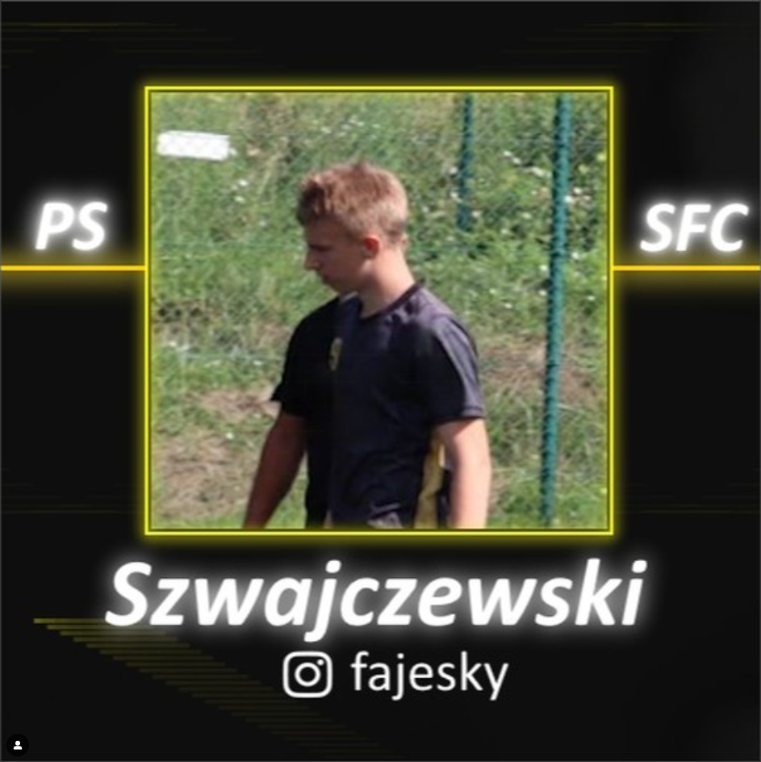
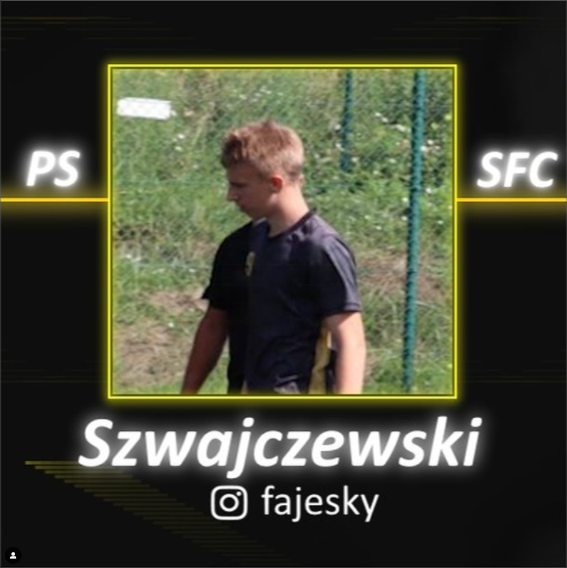
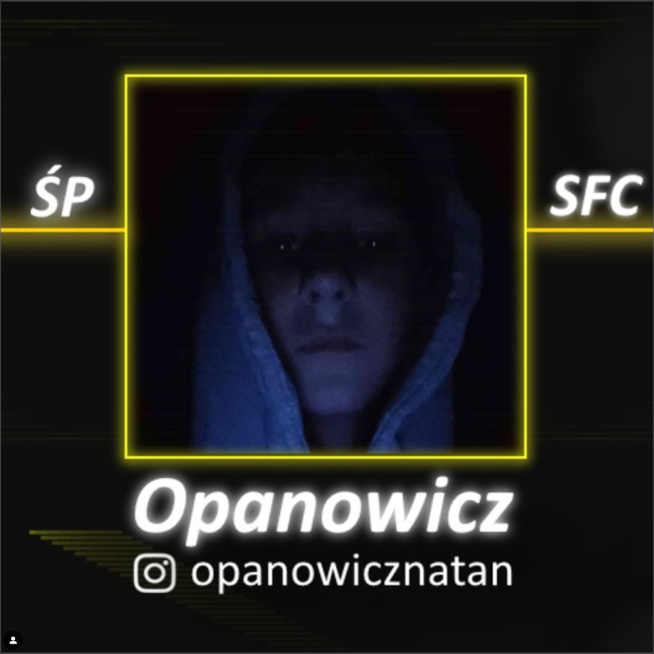
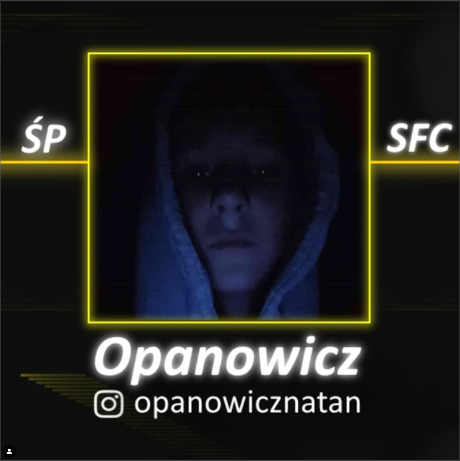

Witamy w SzylenyFC!
Jesteśmy dumni, że możemy gościć Cię na naszej stronie. Śledź nasze aktualności, poznaj naszą drużynę i bądź na bieżąco z terminarzem meczów.
O SzylenyFC
SzylenyFC to drużyna piłkarska, która powstała w 2023 roku. Jesteśmy pasjonatami futbolu, a nasza drużyna wyróżnia się nie tylko na boisku, ale i w społeczności. Celem naszej drużyny jest rozwój młodych talentów.
- Data założenia: 2023 rok
- Trener: Kacper Szwajczewski
- Stadion: Boisko przy szkole podstawowej w Szylenach
- Kolory drużyny: Żółto-czarny
Wyniki Drużyny
SzylenyFC vs. ZKS Zakrzewiec (Sparing) - wynik: 3-9
SzylenyFC vs. Ultra Promil (Sparing) - wynik: 1-6
 

 

Prognoza Pogody
Na nadchodzący mecz z